从 BTP 注册到环境就绪：把 CAP 的「地面」铺好
覆盖对象：SAP BTP 试用（trial）账号 · Global Account / Subaccount / Region / Entitlements / Role Collections · Cloud Foundry org 与 space · btp CLI 与 cf CLI · 服务实例 hana（hdi-shared）/ xsuaa（application）/ destination（lite）——每步都给可观察的成功判据。
- 用真实入口注册一个 SAP BTP 试用账号，并说清 30 天 / 90 天规则与「区域一旦选定不可改」的原因；
- 在 cockpit 里走完 Global Account → Subaccount → Entitlements → Role Collection → Cloud Foundry org/space → 服务实例这一整条链；
- 用 btp login --sso 与 cf login -a <端点> --sso 登录，并用 cf target / cf spaces / cf marketplace -e … 自证环境正确；
- 说出
hana（hdi-shared）、xsuaa（application）、destination（lite）三个实例各自的取舍理由； - 用一份 12 项验收清单判定「环境就绪」，并知道试用账号会在哪些地方悄悄把你拦住。
SAP BTP 的界面文案、可用区域和服务计划随版本与区域变化。本页所有 cockpit 画面都是「高保真重绘」，不是截图；凡是本页无法在 SAP 官方文档中逐字确认的名称，都写成 ~名称（以自环境为准），并在对应小节给出「自系统确认方法」。CLI 输出为示意，逐字以你本机为准。核对来源：SAP Help Portal（SAP BTP / HANA Cloud / Connectivity）、developers.sap.com 教程、cf CLI v8 参考手册。
0. 本页地图：从零到「环境就绪」要做什么
CAP 项目的部署目标是一台 Cloud Foundry 上的应用 + 一个 HANA HDI 容器 + 一个 XSUAA 实例。这些东西都长在 SAP BTP 的账号层级里，而账号层级是先在 cockpit 里手工铺好、再用 CLI 复现的。本页就是那张「铺地」的施工图。
① 拿账号
注册试用全局账户，选定区域，进入 cockpit。产出：可登录的 Global Account + 1 个 trial 子账户。
② 铺层级
Global Account → Subaccount → 启用 Cloud Foundry（org）→ space dev/test。产出：能部署的落地空间。
③ 分配额
Entitlements 里把 hana-cloud / hana / xsuaa / destination 等计划的配额分给子账户。
④ 给权限
角色集合（Subaccount Administrator 等）+ CF 的 Org/Space 角色，两级权限都要给。
⑤ 装工具
btp CLI 与 cf CLI（Homebrew），`--sso` 登录，`cf target` 确认 org/space。
⑥ 建实例
hana（hdi-shared）、xsuaa（application）、destination（lite）三个实例，全部到 Created。
0-1 前置条件（缺一个就会卡住）
人 / 账号
- 一个你能真正收信的邮箱（试用注册与激活邮件都靠它）；
- 若公司已有 SAP 账号：知道自己的 S / P 号或绑定的邮箱（SAP ID service 登录用）；
- 不需要信用卡 —— 试用不涉及付费，注册页也不会要卡号。
机器 / 网络
- macOS + Homebrew（本页 CLI 安装全部走 brew）；
- 能访问
*.hana.ondemand.com、cockpit.btp.cloud.sap、cli.btp.cloud.sap（公司代理要为它们放行）； - 浏览器允许弹窗与下载（SSO 登录会跳转身份提供者）；
- Node.js ≥ 20（后面几页要用来跑
cds；本页只用终端、浏览器与两个 CLI）。
- 区域（Region）：创建子账户时选定，事后在 Edit 里没有区域项（可改的只有 Display Name、Description、Parent、Used for production、Labels、Enable beta features）。要换区域只能新建子账户，而试用只开放少数区域。
- 子域（Subdomain）：同一区域内全局唯一，并且会出现在应用 URL 里，改不动。
- [Advanced] Enable beta features：打开后不能关（SAP Help 明确写了 "Once you have enabled this setting in a subaccount you cannot disable it"）。
自系统确认方法：在 Account Explorer 里对子账户点编辑图标，逐一核对字段列表 —— 找得到 Display Name，找得到 Enable beta features，找不到 Region，这就是「区域不可改」的现场证据。
0-2 全程耗时表（一次性走完，约 60–90 分钟）
| 阶段 | 在哪做 | 关键动作 | 耗时 | 完成产物（可观察） |
|---|---|---|---|---|
| 注册与激活 | 浏览器（sap.com / 试用页 / cockpit） | 注册 → 激活邮件 → Try Now → 选区域 → Create Account | 15 分 （等邮件另计） | Trial Home 出现；Global Account 与 trial 子账户 tile 可见 |
| 层级与区域 | cockpit · 全局账户 | Account Explorer → Create › Subaccount → 填 4 个字段 | 10 分 | 子账户 tile 的 State = OK，Region 一行显示所选区域 |
| 配额分配 | cockpit · 全局账户 + 子账户 | Entitlements → Edit → Add Service Plans → 配额加到上限 → Save | 10 分 | 子账户 Entitlements 表里能看到 8 个左右计划与数字配额 |
| 启用 Cloud Foundry | cockpit · 子账户 | Enable Cloud Foundry → 填 org 名 → 选 free 计划 | 5 分 | Cloud Foundry 区块显示 Org Name 与 https://api.cf.<区域>.hana.ondemand.com |
| 权限 | cockpit · 子账户 Security / Cloud Foundry | Assign Role Collection；Org Members / Space Members 加角色 | 10 分 | 用户详情里能看到 Subaccount Administrator；Org Members 列表里有你 |
| CLI | 本机终端 | brew install --cask btp；brew install cloudfoundry/tap/cf-cli@8；两条 --sso 登录 | 15 分 | cf target 打出 org: trial / space: dev |
| 服务实例 | cockpit 或 cf CLI | 建 demo-hana-db / demo-xsuaa / demo-destination | 15 分 | cf services 三行都是 create succeeded |
| 验收 | 本机终端 | mini 部署 + cf apps | 10 分 | 应用 started，路由可访问 |
db/schema.cds、srv/book-order-service.cds 那些文件）在下一页的 BAS 环境里创建；本页结尾的验收清单正好是下一页开工的前提。1. 概念先行：五层作用域与三类环境
先记住一句话：SAP BTP 的一切操作都有「作用域」。同一个「Users」菜单，在全局账户里管的是账号成员，在子账户里管的是这个项目的成员 —— 搞错作用域，权限和配额就都对不上。
合同 · 配额总池
可选分组
区域 · 成员 · 配额
CF 1:1 于子账户
dev / test / prod
真正跑的东西
| 层级 | 是什么 | 在这里能做什么 | 在这里不能做什么 |
|---|---|---|---|
| Global Account | 你与 SAP 的「合同」的体现（试用也算一份合同），与区域无关 | 建/删子账户与目录、分配 entitlements 与配额、管全局账户成员 | 部署应用、建服务实例 |
| Directory | 可选的分组层，用来按业务/技术需要归拢子账户 | 把配额先分给目录，再由目录分给子账户；目录成员管理（开启 user management 时） | 嵌套目录；部署应用 |
| Subaccount | 区域 + 成员 + 授权 + 配额的作用域，BTP 里最常用的「项目空间」 | 启用运行时（CF / Kyma / ABAP）、建服务实例与订阅、分配角色集合 | 跨区域；改区域 |
| Region | 一个地理位置（应用与数据的托管地），在子账户上选定 | 决定 API 端点、延迟、数据驻留 | 创建后修改 |
| Org / Space | Cloud Foundry 环境内部的两级结构：子账户与 org 是 1:1，一个 org 下可有多个 space | 在 space 里部署应用、建服务实例、再切分 space 配额 | 一个子账户建两个 org |
1-1 为什么要分层（三个真实理由）
① 配额隔离
Entitlements 与配额在全局账户集中管理、层层下发。删掉某个子账户的配额，它会回到全局账户，可以再分给别的子账户 —— 这就是「试用配额本来就少，别一次全占光」的原因。
② 权限最小化
角色集合是账号级的：全局账户里的角色集合不会出现在子账户里，反之也一样。所以「能建子账户的人」和「能在 space 里部署的人」可以是不同的人。
③ 环境隔离
同一个全局账户里可以有 dev / test / prod 三个子账户，各自不同区域、不同成员、不同配额策略。Space 是在子账户内部再切一刀，适合「同项目多分支/多人」的场景。
④ 端点由区域决定
CF 的 API 端点形如 api.cf.<区域>.hana.ondemand.com；同一区域还可能有带索引的写法（api.cf.eu10-001.hana.ondemand.com），两者只是技术细节，功能相同。端点填错是 CAP 部署最常见的入门坑。
1-2 Entitlement 与 Quota：两个词，两种错
| 概念 | 是什么 | 管在哪 | 搞错时的现象 |
|---|---|---|---|
| Entitlement（授权） | 你有权利用某个服务的某个计划（能不能用） | 全局账户 → 分给目录/子账户 | Service Marketplace 里根本看不到这个服务/计划 |
| Quota（配额） | 这个计划你能用多少（能用几个实例、几 GB 内存） | 随 entitlement 一起下发，子账户内被消耗 | 看得到计划，但建实例时报 quota 不足 / not found |
自系统确认方法：在子账户里打开 Entitlements 页面，按服务名搜索 —— 搜得到且 Quota ≥ 1，才轮到你去建实例；搜不到就是授权没分下来，回全局账户补。
1-3 三个环境：CF / Kyma / ABAP，CAP 走哪条
| 环境 | 本质 | 典型用途 | 试用是否提供 | 本章选它吗 |
|---|---|---|---|---|
| Cloud Foundry | 子账户内的 org/space + 应用运行时（buildpack 或 MTA 部署） | CAP Node/Java 服务、Fiori、HANA HDI 部署 | 是（注册时自动启用，并自动建好 space dev） | 是 —— 全课程主线 |
| Kyma | Kubernetes 运行时（命名空间、微服务、Serverless） | 云原生扩展、事件驱动 | 是（需在子账户 Overview 里 Enable Kyma） | 否，仅作了解 |
| ABAP | Cloud Foundry 里的一个专用 space，跑 ABAP 平台（RAP、CDS） | S/4HANA Cloud 扩展 | 是 | 否 |
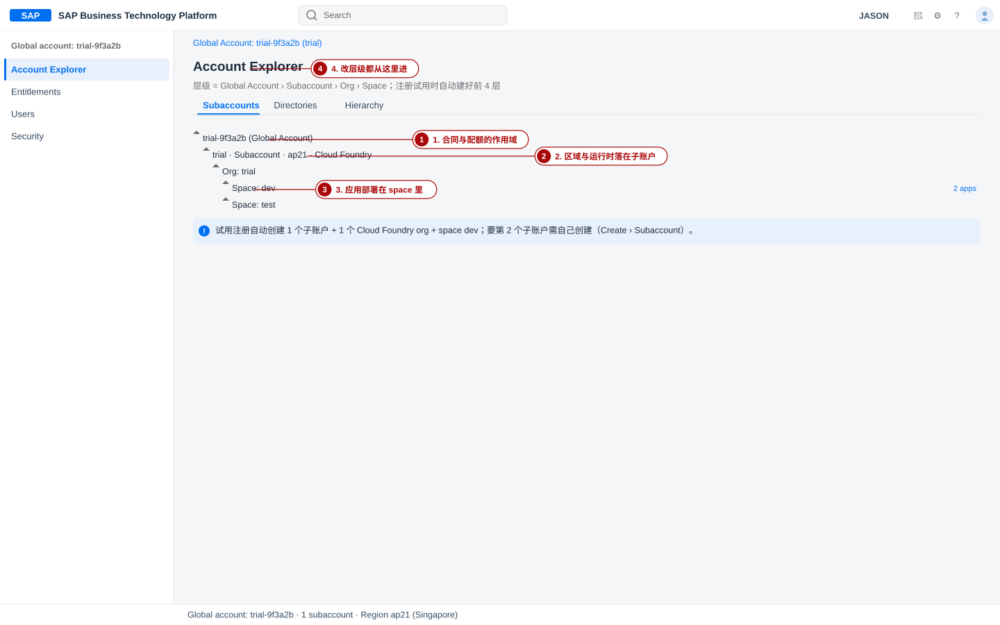
dev。2. 注册 SAP BTP 试用账号
- 先有身份（SAP ID / SAP Universal ID）：打开
https://www.sap.com，点右上角的 Log On。已有 SAP 账号（例如 S / P / C / D / I 号或它的绑定邮箱）就直接登录；没有就点 Register 填表注册。注册的意义是拿到一个SAP Universal ID——它是你在 SAP 各站点（sap.com、developers.sap.com、help.sap.com、cockpit）的通行身份。同一邮箱可以绑多个身份，因此后面登录一律用同一邮箱，别换。
- 验证：邮箱里收到标题类似激活邮件，正文有按钮 Click to activate your account；点完之后页面提示激活成功。没收到就检查垃圾邮件夹，或回登录页重发。
- 申请试用：打开
https://www.sap.com/products/technology-platform/trial.html，点 Try Now，按页面提示走完注册表单（姓名、邮箱、公司名等）。这一步会创建你的试用全局账户。 - 选区域并创建租户：在 Trial Home 里从下拉列表选一个区域，点 Create Account。系统随后弹出进度对话框，自动为你创建：全局账户 → 1 个子账户（通常叫
trial）→ 1 个 Cloud Foundry org → spacedev。区域怎么选当前 SAP Help 的「Regions for Trial Accounts」只列出两个可用于新建试用的 Cloud Foundry 区域：us10（US East (VA)，Amazon Web Services）与ap21（Singapore，Microsoft Azure）；并且明确写了 eu10 已不再接受新的试用账户/子账户（已有账户不受影响）。ap10（Australia (Sydney)，AWS）、ap20（Australia (Sydney)，Azure）、eu10都是企业账户区域。清单随版本变化，以页面下拉框实际显示为准。 - 验证：进度对话框消失后点 Continue，页面跳到 cockpit 的 Trial Home，能看到 Enter Your Trial Account，进去后有一个名为
trial的子账户 tile（名字可能因你手工建过而不同）。 - 记下三个标识：全局账户的 subdomain（如
trial-9f3a2b，btp CLI 登录时会用到）、子账户 ID（btp list accounts/subaccount能打出来）、以及区域（决定api.cf.<区域>.hana.ondemand.com）。 - 验证：在 Trial Home 的 account 信息区（或
btp get accounts/global-account）看到的 subdomain 与主页面上显示一致。
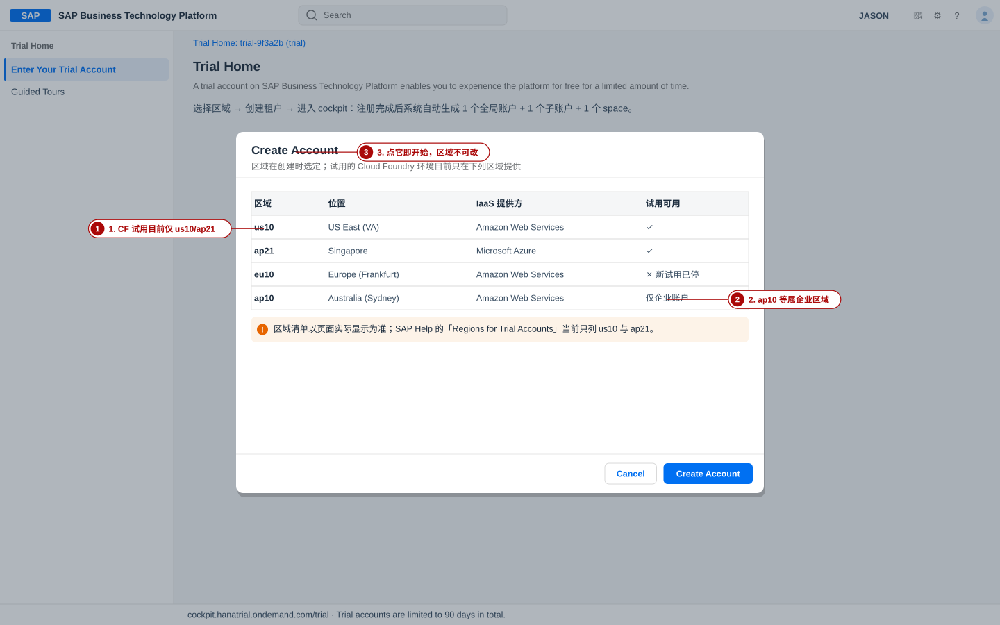
2-1 试用期规则：30 天 / 90 天到底怎么算
2-2 注册阶段的常见错误
| 现象 | 原因 | 对策 |
|---|---|---|
| 收不到激活邮件 | 邮箱服务商过滤；或注册时把邮箱写错 | 查垃圾邮件；换一个能收外信的邮箱重注册（不要用共享/别名邮箱） |
| 登录后看不到「Enter Your Trial Account」 | 只登录了 sap.com，还没申请试用；或者当前登录的是另一个 SAP ID | 回到试用页点 Try Now；确认浏览器里登录的是同一个邮箱 |
| 区域下拉里没有 ap10 / eu10 | 这些区域不再开放新建试用（企业账户区域） | 选 us10 或 ap21；延迟不敏感就用 ap21（亚洲更近） |
| 创建租户对话框一直转圈/超时 | 网络被代理拦截，或该区域瞬时繁忙 | 放行 *.hana.ondemand.com；等几分钟重试，成功后 Extend Trial 只在挂起时出现，别重复注册 |
cf login -a 要写什么）。3. Global Account 界面导览与创建 Subaccount
3-1 先认清「你在哪一层」：左侧导航 + 面包屑
cockpit 的左侧导航随作用域变化，面包屑告诉你现在在哪一层。全局账户（Global Account）作用域下通常只有四项：
| 左侧导航项 | 这一层的作用 | 你会用它做什么 |
|---|---|---|
| Account Explorer | 账号结构：子账户、目录、层级 | 建子账户、进子账户、改子账户属性 |
| Entitlements | 把服务计划与配额分给子账户/目录 | 本章 §4 的核心操作 |
| Users | 全局账户的成员与角色集合 | 加同事为全局账户管理员/观察者 |
| Security | 信任配置（Trust Configuration）、全局账户级角色集合 | 接企业 IdP 时才需要，本章不用 |
点进任何一个子账户后，导航会变成另一套（本节为 ~版本差异，以自环境为准）：Overview、Services（下含 Service Marketplace、Instances and Subscriptions）、Cloud Foundry（下含 Org Members、Spaces、Space Quotas）、Connectivity（下含 Destinations、Cloud Connectors）、Security（下含 Role Collections、Users、Trust Configuration）、以及 Entitlements。
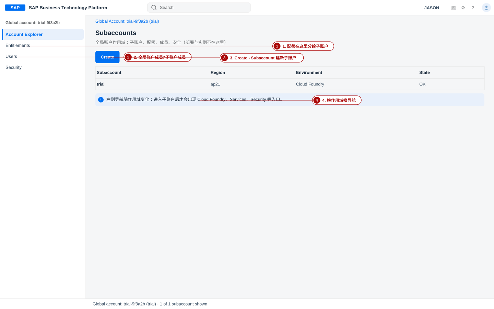
3-2 手顺：创建一个新 Subaccount
- 进入全局账户：Trial Home → Enter Your Trial Account → 左侧 Account Explorer。
- 发起创建：右上角 Create › Subaccount（也可以从全局账户或目录行的 Actions 菜单里选 Create Subaccount）。
- 填 Display Name：如
trial-dev。只是给人看的名字，后面可改。 - 填 Description（可选）：如「CAP 培训用」。
- 填 Subdomain：如
jasontrialdev。规则：≤63 字符，只能用字母/数字/连字符且不能以连字符开头或结尾；同一区域内唯一（大小写视为相同）；它会进入订阅应用后的访问 URL。 - 选 Region：试用的可选项只有当前开放的区域（见 §2）。选了就不能改。
- 选 Provider：与区域绑定的 IaaS（例如 ap21 对应 Microsoft Azure）。界面会随区域自动约束，通常只需确认。
- 选 Parent：默认父节点是你所在的全局账户；若已有目录，可以挂到目录下。
- （可选）Advanced：Enable beta features（开了不能关）、Labels（
env: dev之类，便于在 Account Explorer 里过滤）。 - 验证：Account Explorer 里出现新子账户 tile，Region 一行是你选的区域，State 为
OK；命令行 btp list accounts/subaccount 也能列出它。
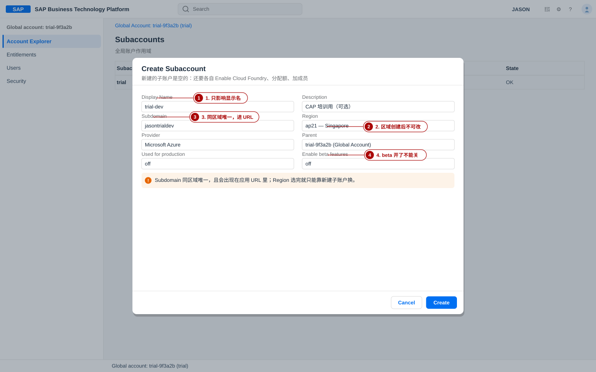
3-3 手顺：把子账户跑起来（启用 Cloud Foundry）
dev；但你后来新建的子账户是空的 —— 必须自己点 Enable Cloud Foundry，一个子账户只有一个 org（1:1）。- 进入子账户：Account Explorer 里点子账户 tile。
- 启用运行时：在 Cloud Foundry 区块点 Enable Cloud Foundry。
- 填 org 名：对话框 Create Cloud Foundry Organization，输入 org 名称（例如
trial-dev），确认创建。 - 选 CF 运行时计划：按需要选
free或standard（试用选free）。 - 验证：子账户的 Cloud Foundry 区块出现 Org Name、API Endpoint（
https://api.cf.<区域>.hana.ondemand.com）与至少一个 space。
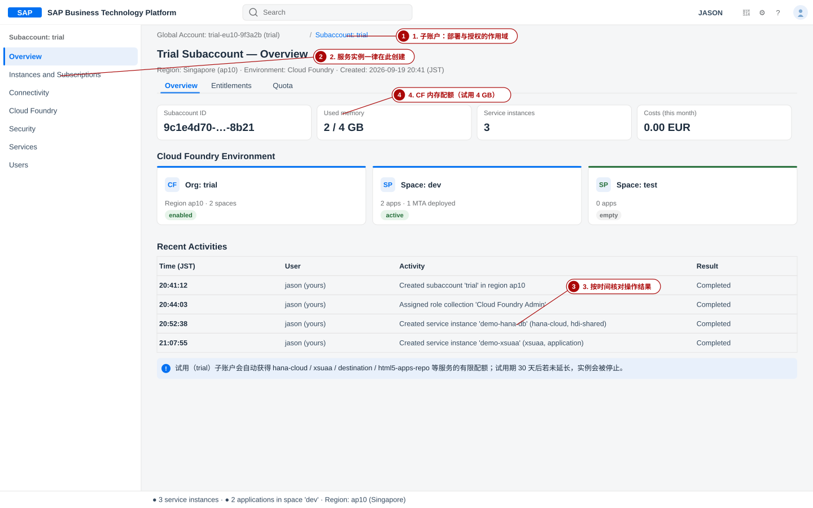
- Create Subaccount 里 Region 下拉比教程少 → 试用可用区域本来就少，属正常；别去找 hack。
- 「Subdomain already in use」 → 同区域已被别人占用（试用的子域常常是
<你的ID>trial），换一个更独特的名字。 - 建完子账户发现没有 Cloud Foundry 区块 → 你还没点 Enable Cloud Foundry；或者配额未分配（回 §4）。
- 把子账户当「环境」用错 → 子账户是授权/配额边界，dev/test 的切分优先用 space。
自系统确认方法：btp list accounts/subaccount 看 Region 列；cf api（登录后）看当前端点。
4. Entitlements 与 Quota：把计划分到子账户
Entitlements 有两个观察点，别搞混：
| 页面 | 层级 | 谁能看/改 | 用途 |
|---|---|---|---|
| Entitlements › Entity Assignments | 全局账户 | 全局账户管理员，可查看可编辑 | 以「人/实体」为视角，把计划分给子账户或目录 |
| Entitlements › Service Assignments | 全局账户 | 全局账户管理员，仅查看 | 以「服务」为视角，看每个计划分给了谁（排查配额去哪了） |
| Entitlements | 子账户 | 子账户成员可查看；全局账户管理员可编辑 | 在子账户里确认「我有哪些计划、配额多少」 |
4-1 手顺 A：在子账户里补齐配额（推荐先做这一步）
- 进子账户 → Entitlements，先在那个搜索框里搜
SAP HANA，看现在有哪些计划。
验证：至少能看到 SAP HANA Cloud 与 SAP HANA Schemas & HDI Containers 两组。 - 进入编辑态：点右上角 Edit（部分版本显示为
~Configure Entitlements，作用相同，以自环境为准）。 - 添加计划：点 Add Service Plans，在弹窗里左侧选服务、右侧勾计划（搜索框输入
SAP HANA能筛出相关服务）。勾完点 Add X Service Plans。 - 把数字配额加到上限：回到表格，对每个有数字配额的计划点 +，直到加号变灰（= 已到上限）。
- Save 退出编辑态。
- 验证：Entitlements 表里每个计划的 Quota 列有数字（≥1）；然后到 Services › Service Marketplace，这些计划能被搜到且可点 Create。
4-2 手顺 B：从全局账户分配（团队场景）
- 全局账户 → Entitlements → Entity Assignments。
- 选中目标子账户 → Edit → Add Service Plans → 勾选计划 → 设定配额 → Save。
- 验证：切到 Service Assignments 标签，能看到该计划分配给了哪个子账户、剩余多少；子账户侧的 Entitlements 也同步出现。
4-3 试用账号默认能看到哪些计划（核实清单）
下面这张表是需要确认存在的计划，不是「抄下来就行」——请用第 3 列的确认方法在你自己的环境里核对。
| 服务（技术名） | 计划 | 用途 / 取舍 | 自系统确认方法 |
|---|---|---|---|
SAP HANA Cloud（hana-cloud） | hana-free（免费层；企业环境还有 hana、relational-data-lake-free、hana-cloud-connection-free、tools） | 数据库实例本体。试用里用 SAP HANA Cloud Central 建（免费层固定规格），建完要映射到 CF org/space | 子账户 Entitlements 搜 SAP HANA Cloud；或 cf marketplace -e hana-cloud |
SAP HANA Schemas & HDI Containers（hana） | hdi-shared | CAP 部署的目标：HDI 容器，带部署所需的元数据与用户 | Entitlements 搜 HDI；cf marketplace -e hana |
| 同上 | schema | 裸 schema，没有 HDI 部署能力 → CAP 用不上 | 同上 |
| 同上 | securestore | HANA Secure Store，存凭据用；本章不用 | 同上 |
Authorization and Trust Management Service（xsuaa） | application | CAP 应用的认证与授权（角色、scope）。broker / apiaccess 是给多租户与 API 管理场景的，别拿错 | cf marketplace -e xsuaa |
Destination（destination） | lite | 目标系统连接配置（免费层计划，跨环境可见） | cf marketplace -e destination |
Application Logs（application-logs） | lite | 应用日志检索（排错有用，非必需） | cf marketplace -e application-logs |
HTML5 Application Repository（html5-apps-repo） | app-host / app-runtime | Fiori/HTML5 应用的托管与消费；做前端时才加 | cf marketplace -e html5-apps-repo |
Connectivity（connectivity） | lite | Cloud Connector 通道；本地系统集成时才加 | cf marketplace -e connectivity |
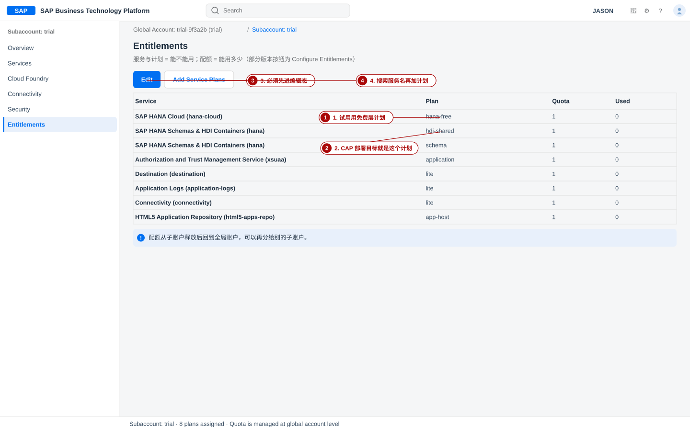
4-4 试用的配额天花板（别忽略这些数字）
| 资源 | 试用额度 | 对你意味着什么 |
|---|---|---|
| 应用内存 | 4 GB | CAP 服务 + 路由应用通常够用；cf push -m 别写 2G 以上 |
| 实例内存 | 8 GB | 服务实例占用的内存额度 |
| 路由（routes） | 10 条 | 每个应用一条路由，别反复 cf push 生成垃圾路由 |
| 服务实例 | 40 个 | 看起来很多，但配额是按计划卡的（例如 hdi-shared 通常只有 1 个） |
| Cloud Connector | 2 个可配置的本地系统 | 本章用不到 |
| HDI 容器 | 共享 HANA 数据库上的 HDI 容器（SAP Help 注明仅 cf-us10 提供） | 如果你的 HANA Cloud 免费层实例建不起来，先看这条 |
hdi-shared 属于服务 hana（显示名「SAP HANA Schemas & HDI Containers」），不是 hana-cloud。写成 cf create-service hana-cloud hdi-shared … 会直接报错。另一个常见报错是 Service plan hdi-shared not found —— 那是「配额没分给这个子账户」或「端点连到了别的区域」。5. 用户与权限：两级模型，两处入口
SAP BTP 的权限有两套，混用会白折腾半天：
| 层级 | 管什么 | 在哪里分配 | 本章需要的最小集合 |
|---|---|---|---|
| 平台账号级（角色集合 Role Collections） | 能不能进 cockpit、能不能建实例/订阅、能不能管安全 | 子账户 → Security › Users（或 Role Collections） | Subaccount Administrator（试用创建者默认就有） |
| Cloud Foundry 级（Org / Space 角色） | 能不能在你这个 org/space 里部署、绑服务 | 子账户 → Cloud Foundry › Org Members / Space Members | org 创建者自动获得 Org Manager；部署需要 Space Developer |
5-1 默认角色集合速查（可逐字核对的名称）
| 角色集合 | 范围 | 给谁 / 干什么 |
|---|---|---|
| Global Account Administrator | 全局账户 | 改全局账户、设 entitlements、建/改/删子账户 |
| Global Account Viewer | 全局账户 | 只读：看子账户、entitlements、区域 |
| Subaccount Administrator | 子账户 | 子账户管理员：看配额、建/删环境实例、管用户与授权（内含 Subaccount Admin、User and Role Administrator、Subaccount Service Administrator、Destination Administrator、Cloud Connector Administrator 等角色） |
| Subaccount Viewer | 子账户 | 只读子账户信息（想给同事「看得到、改不了」就用它） |
| Directory Administrator / Directory Viewer | 目录 | 目录建好后可用；开启 user management 时创建者自动获得 Administrator |
| Subaccount Service Administrator | 子账户 | Service Manager / service broker 层面的管理 |
| Destination Administrator / Connectivity and Destination Administrator | 子账户 | 管 Destination 与 Cloud Connector |
~SAP HANA Cloud Administrator（订阅 SAP HANA Cloud tools 后出现） | 子账户 | 打开 SAP HANA Cloud Central、建 HANA Cloud 实例 |
~名称（以自环境为准） 处理。5-2 手顺：给成员分配角色集合（cockpit）
- 进子账户 → Security → Users。列表里应当已经有你自己的邮箱，Origin 默认是
sap.ids（SAP ID service）。 - 选中用户（点邮箱那一行）→ 点 Assign Role Collection。
- 勾选角色集合（例如
Subaccount Administrator、Subaccount Viewer）→ 确认。 - 验证：该用户的 Role Collections 列出现你勾的集合；用 CLI 交叉验证 btp get security/user "你的邮箱" 也能看到。
- （可选）给同事只读权限：先把他加成子账户成员，再分配
Subaccount Viewer。
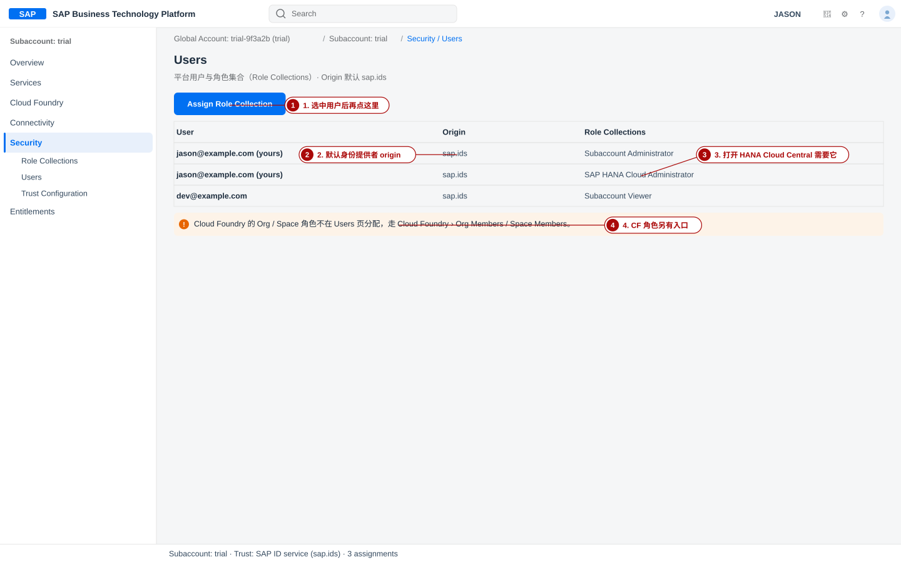
5-3 手顺：CF 侧的角色（部署权限）
- 子账户 → Cloud Foundry → Org Members → Add Members。
- 填邮箱（多个用逗号/空格/分号分隔）→ 选 Origin（默认
sap.ids；只有配置了多个 IdP 时才会出现该下拉）→ 勾选 org 角色 → Add。 - 验证：Org Members 列表出现该用户与角色（你自己应当是 Org Manager —— 启用 CF 时自动授予）。
- 要让人真正能部署：进入目标 space → Space Members → Add Members → 勾 Space Developer。
- 分配了角色集合却还是进不去某个页面 → 角色变更需要刷新/重新登录才生效（token 里带着旧的授权）。
~以自环境为准。 - 在 Users 页找不到 CF 角色 → CF 角色本来就不在那里。
- 试用账号拿来做团队协作 → 试用的使用条款明确写了它面向个人探索，不得用于生产或团队开发。多人协作请用带 free tier 的企业账户。
- 给所有人的都是 Administrator → 最小权限原则：只读给 Viewer。
自系统确认方法：btp list security/user 看成员；btp list security/role-collection 看当前作用域有哪些集合；cf org-users trial 看 org 角色。
6. Cloud Foundry 环境：org 与 space
CF 环境的结构只有三句话：子账户 ↦ 一个 org（1:1）；一个 org 可以有多个 space；应用与服务实例都建在 space 里。配额可以按 space 再切（Space Quotas），不切时空就吃 org 的额度。
区域 · 授权
4 GB · 10 routes
部署用
回归用
6-1 手顺：确认试用自动建好的环境
- 子账户 → Cloud Foundry（或在 Overview 页看 Cloud Foundry 区块）。
- 核对四个值：Org Name（试用通常叫
trial）、API Endpoint、Org Memory（4 GB）、space 列表里有dev。 - 验证：API Endpoint 形如
https://api.cf.<你的区域>.hana.ondemand.com；把它抄下来，§7 的cf login -a要逐字用它。
6-2 手顺：再建一个 space（dev / test 分家）
- 子账户 → Cloud Foundry › Spaces → 右上角 Create Space（也可以从子账户 Overview 的 Spaces 表里点同一按钮）。
- 输入 space 名（如
test），勾选给自己的 space 角色（Space Developer 是部署必需；想管配额再加 Space Manager）。 - Save。
- 验证：Spaces 列表出现
test；命令行 cf spaces 也能列出dev与test。
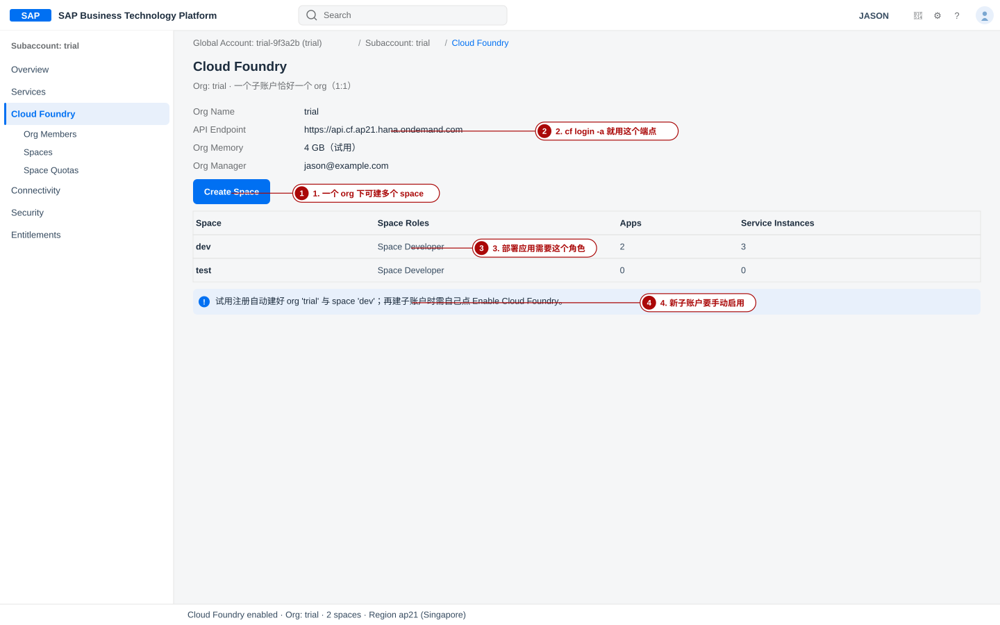
6-3 双路验证：cockpit 与 cf CLI 必须一致
| 看什么 | cockpit | cf CLI | 一致时的样子 |
|---|---|---|---|
| 端点 | Cloud Foundry 区块的 API Endpoint | cf api | 两个 URL 逐字相同 |
| org / space | Org Name；Spaces 列表 | cf target / cf spaces | org: trial、space: dev |
| 成员与角色 | Org Members / Space Members | cf org-users trial / cf space-users trial dev | 角色列表一致 |
| 可用的服务计划 | Services › Service Marketplace | cf marketplace / cf marketplace -e hana | 计划名一致 |
No org or space targeted→ 登录后没选目标：cf target -o trial -s dev（名字按你的环境）。Org name is taken→ org 名在同一区域唯一，换名。- 空间建好了却部署失败 → 你在 org 里有角色，但 space 里没有 Space Developer。
- 端点记错区域 →
api.cf.ap21…写成api.cf.ap10…会一直认证失败，因为试用账户根本不在那个区域。
自系统确认方法：cf api 打印当前端点；再和 cockpit 的 API Endpoint 逐字对比。
7. CLI 工具链：btp CLI 与 cf CLI
两个 CLI 分工不同，都要装：
btp CLI（账号平面）
- 管全局账户/目录/子账户、entitlements、角色集合、订阅；
- 官方 macOS 安装方式：Homebrew cask（或从 SAP Development Tools 下载二进制）；
- 登录后会话最长 12 小时，会存本地；btp logout 提前结束。
cf CLI（运行时平面）
- 管应用、路由、服务实例、org/space 成员；
- v8 的二进制名是
cf8，官方同时装一个指向它的cf符号链接，所以cf与cf8都能用； - 装完
cf --version能自证版本。
7-1 手顺：安装与登录 btp CLI
- 安装（SAP Help 明确给出的 macOS 方式之一）：
验证：bashbrew install --cask btpbtp --version打出客户端版本；btp（不带参数）会显示版本与基本用法。 - 登录（SSO）：
期望输出/过程：先提示确认 CLI 服务器地址（默认bashbtp login --sso # 不想自动开浏览器（例如用另一台机器的浏览器）： btp login --sso manual # 一次把服务器地址与全局账户 subdomain 写全： btp login --sso --url https://cli.btp.cloud.sap/ --subdomain trial-9f3a2bhttps://cli.btp.cloud.sap/，回车即可），浏览器弹出身份提供者登录页；认证完成后回到终端，命令行报登录成功并显示当前全局账户。验证：btp target 打出Global account: <你的 subdomain>。 - 看全局账户与子账户：
验证：子账户列表里 Region 一列与你 cockpit 里的一致；用户详情里能看到已分配的角色集合。bashbtp get accounts/global-account btp list accounts/subaccount btp get security/user "你的邮箱" - 切换作用域（btp CLI 的默认作用域是登录的全局账户；要操作子账户内的资源需要换目标）：
验证：输出里的目标变成该子账户；entitlement 列表出现 §4 分配的计划。bashbtp target -sa <subaccount-id> btp list accounts/entitlement
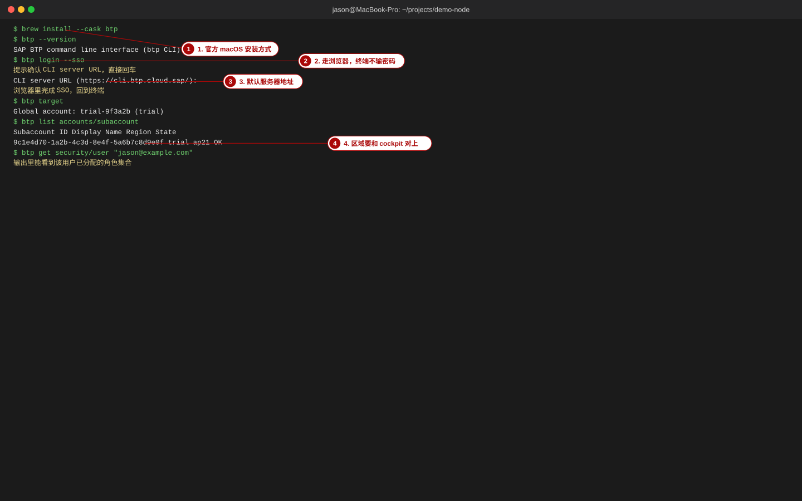
7-2 手顺：安装与登录 cf CLI
- 安装（cf CLI v8 官方 macOS 方式）：
验证：bashbrew install cloudfoundry/tap/cf-cli@8cf --version打印cf version 8.x.y。 - 指向端点并登录（端点 = 子账户 Overview/Cloud Foundry 里的 API Endpoint，逐字复制）：
期望输出：先打印bashcf api https://api.cf.ap21.hana.ondemand.com cf login -a https://api.cf.ap21.hana.ondemand.com --ssoAPI endpoint: https://api.cf.ap21.hana.ondemand.com，然后用--sso时会给出一次性验证码页面地址（形如https://login.cf.ap21.hana.ondemand.com/passcode）：用浏览器打开、登录、复制验证码粘回终端，最后出现Authenticating...→OK。也可以不用 --ssocf login交互式输入邮箱与密码同样可行（-u/-p也能直接给，但不建议把密码写进 shell 历史）。--sso更安全，推荐默认用。 - 确认目标：
验证：bashcf target cf spacescf target五行输出里org: trial、space: dev都要有值；cf spaces列出dev（以及你建的test）。 - 确认计划存在（建实例前必做）：
验证：能看到bashcf marketplace # 列出 org 里所有服务 cf marketplace -e hana # 只看 hana 服务的计划详情（-e = 显示指定服务的计划）hdi-shared/schema/securestore三个计划，且都是free。
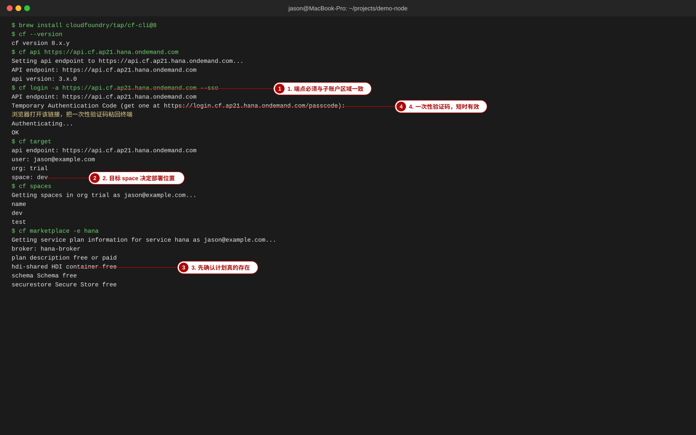
7-3 CLI 常见错误（照表排）
| 现象 | 原因 | 对策 |
|---|---|---|
wrong region endpoint / 认证反复失败 | -a 的端点不是这个子账户所在区域 | 回 cockpit 看 API Endpoint 并逐字复制；试用常见是 api.cf.us10… 或 api.cf.ap21… |
Invalid refresh token / 突然要求重新登录 | btp CLI 会话上限 12 小时；cf 的 token 过期 | btp logout 后重新 btp login --sso；cf 侧重新 cf login --sso |
No org or space targeted | 只登录了凭据，没有选 org/space | cf target -o trial -s dev |
Not logged in. Use 'cf login' … | 会话过期或换终端 | 重新登录即可，实例与账户不受影响 |
btp: command not found | brew cask 装完但 PATH 未生效（或用了 sudo 装的） | 新开终端；brew list --cask btp 确认已装；必要时手动把二进制放进 PATH |
cf: command not found | 装的是 v8，二进制叫 cf8 而 cf 链接没生成 | 先试 cf8 --version；brew reinstall cloudfoundry/tap/cf-cli@8 |
SSO 页面报 Passcode expired | 一次性验证码有效时间很短 | 重新执行 cf login --sso 拿新码，拿到后立即粘贴 |
You are not authorized to perform the requested action | 作用域或角色不足（例如在全局账户上跑 cf 命令） | 核对当前作用域（btp target / cf target）与角色（§5） |
8. 创建关键服务实例：hana / xsuaa / destination
三个实例各司其职。先看「建什么、为什么」，再看「怎么建」。
| 实例（本站示范项目名） | 服务（技术名） | 计划 | 为什么是这个计划 |
|---|---|---|---|
demo-hana-db | hana（显示名 SAP HANA Schemas & HDI Containers） | hdi-shared | CAP 部署要的是 HDI 容器（带元数据、部署用户与角色），schema 只是裸 schema，cds deploy --to hana:demo-hana-db 依赖 HDI |
demo-xsuaa | xsuaa | application | 给应用做认证与授权。broker 是给多租户 SaaS 的、apiaccess 是给 API 访问管理的，都不是本章场景 |
demo-destination | destination | lite | Destination 服务公开可跨环境消费，lite 就是它面向所有环境的免费层计划 |
hana-cloud，计划如 hana-free）是数据库实例本体；SAP HANA Schemas & HDI Containers（hana，计划 hdi-shared/schema/securestore）才是 CAP 投放 schema 的地方。试用里前者用 SAP HANA Cloud Central 创建（免费层固定规格），建好后还要把它 映射（Instance Mapping）到你的 CF org（可选 space），HDI 容器才有地方落。8-1 手顺 A：用 cockpit 创建
- 进 Service Marketplace：子账户 → Services → Service Marketplace，或用 Instances and Subscriptions 页右上角的 Create。
验证：搜hana能看到 SAP HANA Schemas & HDI Containers 与 SAP HANA Cloud 两个服务。 - 建 HDI 容器：Create → Service 选 SAP HANA Schemas & HDI Containers → Plan 选
hdi-shared→ 实例名填demo-hana-db→ Runtime Environment 选 Cloud Foundry (<你的区域>) → （若向导给参数框）填入 HANA Cloud 实例的 ID 以完成映射 → Create。
验证：Instances and Subscriptions 列表出现demo-hana-db，Status 变Created；cf services 也能看到。 - 建 XSUAA：Create → Service 选 Authorization and Trust Management Service（
xsuaa）→ Planapplication→ 实例名demo-xsuaa→ 参数里给xs-security.json（本章可先不给，部署页再补）→ Create。 - 建 Destination：Create → Service 选 Destination → Plan
lite→ 实例名demo-destination→ Create。 - 验证：三个实例的 Status 全部
Created；cf services 三行的last operation都是create succeeded。
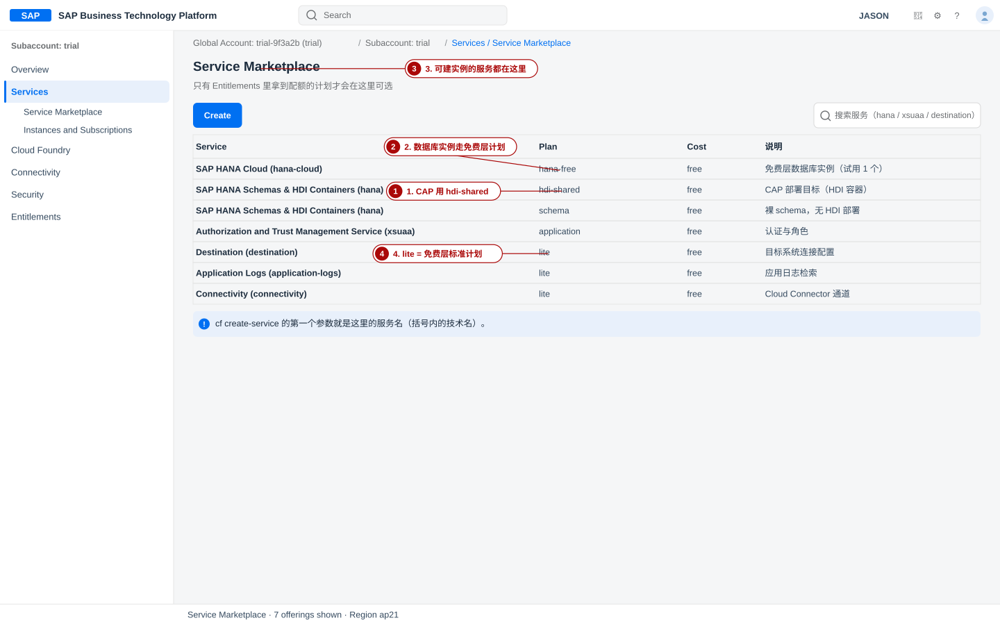
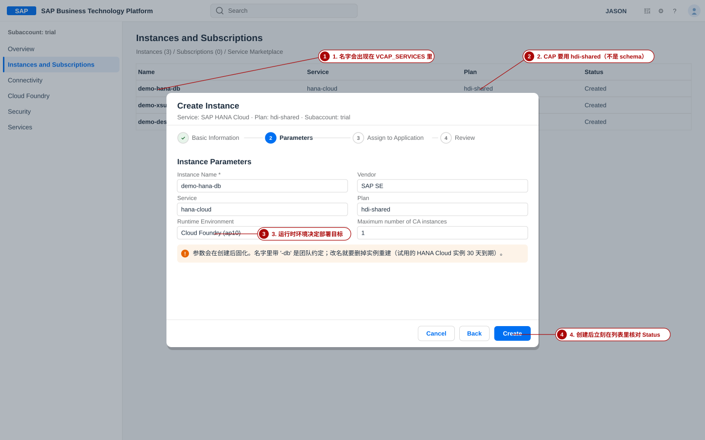
8-2 手顺 B：用 cf CLI 创建（与 cockpit 等价，可脚本化）
- 先确认计划存在：
验证：分别能看到bashcf marketplace -e hana cf marketplace -e xsuaa cf marketplace -e destinationhdi-shared、application、lite。 - 建三个实例：
验证：每条命令返回bash# 语法：cf create-service SERVICE PLAN SERVICE_INSTANCE cf create-service hana hdi-shared demo-hana-db cf create-service xsuaa application demo-xsuaa cf create-service destination lite demo-destinationCreating service instance demo-… in org trial / space dev as …与OK。 - 轮询到就绪（HANA 容器通常要等十几秒到几分钟）：
验证：bashcf services cf service demo-hana-dbcf services里三行last operation=create succeeded。
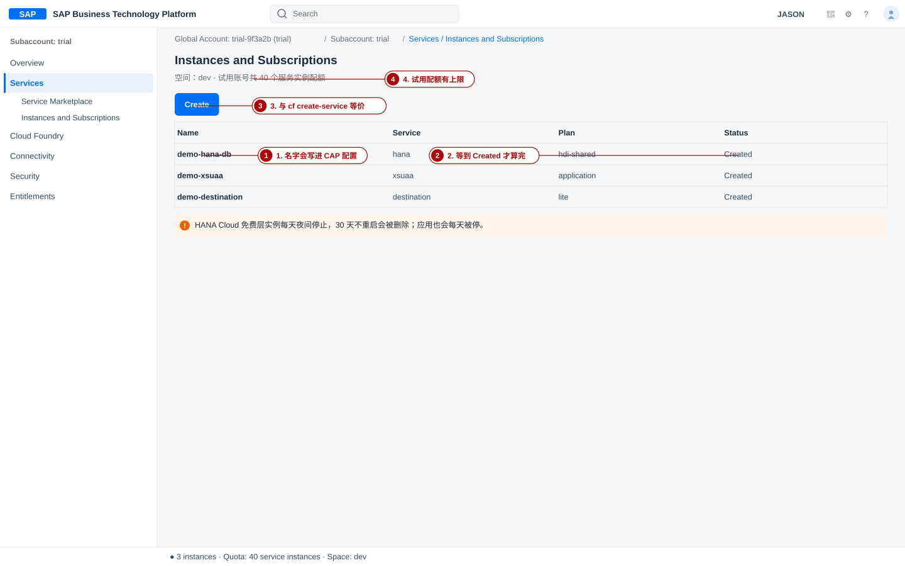
8-3 参数选择的取舍（为什么不是别的计划）
| 选择 | 选它的理由 | 换成另一个会怎样 |
|---|---|---|
hdi-shared vs schema | HDI 容器带部署元数据与专用技术用户，cds deploy 与 MTA 部署都依赖它 | 用 schema：CAP 的 cds deploy --to hana: 与 MTA 的 com.sap.xs.hdi-container 都跑不起来 |
xsuaa 的 application vs broker / apiaccess | 普通单租户应用的认证授权 | broker 面向多租户 SaaS 的授权分发；apiaccess 面向 API 访问管理，都会让 xs-security 配置与预期不符 |
destination 的 lite | 免费层，够用（存目标系统地址与凭据） | 升到付费计划要企业账户配额；试用里根本拿不到 |
实例名 demo-* 前缀 | 与本站示范项目（package.json/mta.yaml 里的服务名）保持一致，部署页不用改配置 | 名字不一致 → 部署时找不到服务绑定，报「service not found」 |
Service plan hdi-shared not found→ ①配额没分给这个子账户（回 §4）；②端点连到了别的区域（cf api 核对）；③服务名写成了hana-cloud。Instance name is taken→ 同名实例已存在；cf services 先看，或换名。- HANA 容器一直
create in progress最后失败 → HANA Cloud 实例还没建好、或没映射到你的 org；先去 SAP HANA Cloud Central 完成 Instance Mapping。 - 建到第 2 个
hdi-shared时报配额不足 → 试用里该计划通常只给 1 个，删旧的重建。
自系统确认方法：cf marketplace -e hana 确认计划名与免费与否；cf service <实例名> 看单个实例的详细状态与绑定关系。
9. 环境就绪验收：一份清单 + 5 分钟 mini 验证
- 能用同一邮箱登录 cockpit（Trial Home 能看到 Enter Your Trial Account）；
- Global Account 与自己的 subdomain 对得上（btp get accounts/global-account）；
- 至少一个子账户，Region 与预期一致；
- 子账户的 Cloud Foundry 已启用，能看到 Org Name 与 API Endpoint；
- org 下至少有一个 space，本站示范项目用
dev； - Entitlements 里
hdi-shared、xsuaa application、destination lite都有配额； - 三个服务实例（
demo-hana-db/demo-xsuaa/demo-destination）状态Created； - 自己的用户有
Subaccount Administrator角色集合，并在 org 里有 Org Manager、在 space 里有 Space Developer； - btp target 与 cf target 都指向正确的作用域；
- cf spaces 列出
dev；cf marketplace -e hana 列出hdi-shared； - 能完成一次最小部署（下一小节），应用状态
started； - 知道自己账号的剩余天数与「每天会停应用」这件事，并已在日历上设了登录提醒。
9-1 五分钟 mini 验证：部署一个 hello world 级别的应用
目的不是功能，而是证明「能 push、能出路由、能访问」这条链路是通的。用一个静态页面就够了（后续 CAP 项目的部署流程与此同源，只是多了 build 与 MTA）。
- 准备一个最小应用目录：
验证：目录里有bashmkdir -p ~/tmp/hello-cf && cd ~/tmp/hello-cf printf 'Hello from SAP BTP\n' > index.html ls -lindex.html。 - 推送（用静态 buildpack；buildpack 名以 cf buildpacks 输出为准，也可用官方 Git 地址）：
期望输出：命令打印上传 → staging →bashcf buildpacks | head -5 cf push demo-hello -m 64M -k 128M -b staticfile_buildpackWaiting for app to start...→ 应用路由（形如demo-hello.cfapps.<区域>.hana.ondemand.com）与state: started。验证：cf apps 里demo-hello是started。 - 访问：浏览器打开那条路由，应当看到
Hello from SAP BTP。
验证：页面正常返回 200，不是 404/502。 - 收摊（试用的内存与路由都很紧）：
验证：应用从列表消失。bashcf delete demo-hello -f cf apps
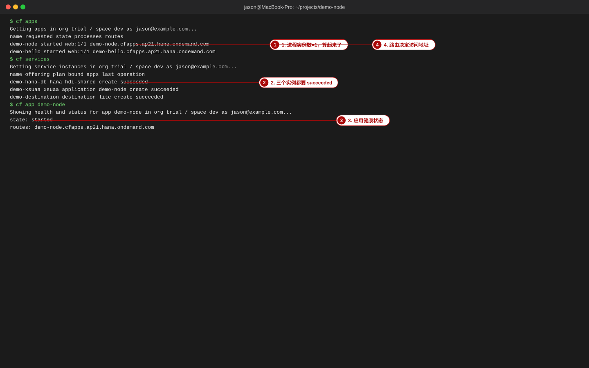
state: started —— 此时你的环境就是「就绪」：有账号、有层级、有配额、有权限、有 space、有 3 个实例、并已验证过部署通道。10. 试用账号的坑与止损
| 坑 | 现象 | 止损动作 |
|---|---|---|
| 30 天不登录被挂起 / 90 天到期删除 | 某天登录后弹窗提示，应用与服务不可用 | 看到 Extend Trial 就点；平时每 2–3 周登录一次；满 90 天前把成果备份到本地（cds build 产物、db/data/*.csv、代码仓库） |
| 应用每天被停 | 早上发现应用是 stopped，路由 404 | 属于设计行为：cf start <app> 重启；把演示安排在「刚重启之后」 |
| HANA Cloud 免费层实例夜间停 / 30 天不重启被删 | 数据库连不上；实例列表里不见了 | 在 SAP HANA Cloud Central 里重启实例；长期不用就接受重建（重新建实例 + 重新 cds deploy） |
| 区域不可改 | 发现延迟大或服务缺计划，想换区 | 在全局账户里新建一个子账户到目标区域，把配额挪过去；旧子账户删掉（或保留只读） |
| Entitlement / 配额冲突 | Service plan … not found 或 quota exceeded | 在全局账户 Entitlements › Service Assignments 看配额分给了谁；从别的子账户释放，再分给当前子账户 |
| 多用户 / 协作冲突 | 同事进不来，或两人同时改同一实例 | 记住试用条款：面向个人探索，不得用于团队开发。要协作就换带 free tier 的企业账户，并给最小角色（Viewer / Space Developer） |
| 成本为 0 但配额有限 | 「不要钱」误以为可以随便建 | 把 §4-4 的数字贴到团队 wiki：4 GB 应用内存、8 GB 实例内存、10 路由、40 实例、2 个 Cloud Connector；cf push 时显式写 -m |
| HDI 容器只在 cf-us10 提供（SAP Help 记事） | ap21 上建 hdi-shared 时计划缺失或建不出共享数据库的容器 | 先 cf marketplace -e hana 确认计划；若确实缺失，就在 us10 新建子账户放 HANA 相关实例（数据库与应用的区域要一致） |
| beta 开关不可逆 | 为了试用新功能打开了 Enable beta features，之后想去掉 | 去不掉；用前先想清楚（该开关在子账户创建时或 Edit 里设置） |
| 登录方式混乱（S 号 / 邮箱 / Universal ID） | 同一邮箱多个账号，CLI 报用户不存在 | 统一用一个邮箱登录；若同邮箱有多个用户，CLI 里用 S/P 号代替邮箱（SAP Help 建议）；必要时 btp logout 后重登 |
11. 常见错误总表（现象 → 原因 → 对策）
| # | 现象 | 原因 | 对策 |
|---|---|---|---|
| 1 | 注册后找不到试用入口 / 没有 Trial Home | 只登录了 sap.com，未申请试用；或登录了另一个 SAP ID | 回试用页点 Try Now；确认浏览器登录邮箱与注册邮箱一致 |
| 2 | 区域下拉里没有想要的区域 | 该区域不再开放新建试用（如 eu10），或该区域不提供 CF 试用 | 改选 us10 / ap21；区域清单只在试用页与 Create Subaccount 对话框里看 |
| 3 | Subdomain already in use | 同区域内子域必须唯一 | 换成带自己标识的名字，例如 你的IDtrial |
| 4 | 子账户建好后没有 Cloud Foundry 区块 | 新子账户需要手动 Enable Cloud Foundry | 子账户 → Cloud Foundry → Enable Cloud Foundry → 填 org 名 → 选 free 计划 |
| 5 | Service Marketplace 里搜不到 hana / xsuaa | Entitlements 没分配该服务/计划给子账户 | 子账户 Entitlements → Edit → Add Service Plans → 勾选 → Save |
| 6 | Service plan hdi-shared not found | 配额未分配；或端点/区域不对；或把服务名写成 hana-cloud | cf marketplace -e hana + cf api 双向核对；服务名用 hana |
| 7 | No org or space targeted | 登录后没选目标 | cf target -o trial -s dev |
| 8 | Wrong region endpoint / 登录反复失败 | -a 的端点与子账户区域不符 | 从 cockpit 复制 API Endpoint：https://api.cf.<区域>.hana.ondemand.com |
| 9 | btp CLI 命令报 token 失效 | 会话上限 12 小时 | btp logout → btp login --sso |
| 10 | 角色给了还是进不去 / 看不到菜单 | 授权未刷新；或给的是另一层级的角色（账号级 vs CF 级） | 重新登录刷新 token；核对 §5 的两级模型，CF 角色去 Org/Space Members 分配 |
| 11 | 部署时 Service instance not found / 绑不上 DB | 实例名与项目配置不一致；或实例不在目标 space | 实例名统一用 demo-hana-db；cf services 确认它在该 space |
| 12 | 应用被停后路由返回 404 | 试用每天会停掉应用 | cf start <app>；把演示安排在重启后 |
| 13 | HANA 容器创建超时/失败 | HANA Cloud 实例未就绪或未映射到 org/space | HANA Cloud Central → Instance → Manage Configurations → Instance Mapping → Add Mapping 到你的 org，再重建容器 |
| 14 | 配额不足，建不了第二个实例 | 试用按计划限额（如 hdi-shared 常只有 1 个） | 删掉不用的实例释放配额；或在全局账户把配额从别的子账户挪过来 |
| 15 | 试用期内数据/应用全部消失 | 满 90 天被删除，或 30 天未登录被挂起后未恢复 | 提前备份代码与 CSV；把「每周登录一次」写进日程 |
12. 小结与下一页指引
你这一页交付了什么
- 一个可登录的 SAP BTP 试用全局账户（知道 subdomain、区域、剩余天数）；
- 一个子账户 + Cloud Foundry org + space
dev（知道 API Endpoint）； - 已分配的 entitlements 与配额（
hdi-shared/xsuaa application/destination lite等）； - 两级权限：
Subaccount Administrator（账号级）+ Org Manager / Space Developer（CF 级）； - 两个 CLI 可用并用
--sso登录，cf target 指向trial/dev； - 三个服务实例：
demo-hana-db、demo-xsuaa、demo-destination，全部Created； - 一次通过验证的最小部署记录（mini 验证）。
三条最该记住的：① 区域与子域不可改，选之前先想清楚；② 服务名别混（hana 才是 HDI 容器那个服务）；③ 试用会停你的应用，验收完记得收摊。
下一页：BAS 里建项目
在 SAP Business Application Studio 里创建 demo-node 工作区，写 db/schema.cds 与 srv/book-order-service.cds。
再往后：本地跑通 CAP
cds watch / cds deploy --to sqlite:db.sqlite，用 test/odata-verify.sh 验收 26 项。
最后：部署到 BTP
把本页建好的三个实例绑给应用，cds build --production + 推送/MTA 部署。
本页的自测题在下面第 13 节；也可以直接跳 自测 · BTP 开通与环境。
13. 本节测试
先把这一页的三张表（层级职责、计划取舍、常见错误）在脑子里过一遍，再回答下面 8 个问题。答不上来的，回到对应小节：1→§2，2→§3，3→§4，4→§8，5→§6，6→§7，7→§5，8→§10。
- 试用账号的总时长上限与「会被挂起」的判定条件分别是什么？
- 为什么说「区域选定后不可改」？请给出一条自系统确认方法。
- Entitlement 与 Quota 的区别是什么？各自搞错时你会看到什么现象？
- CAP 部署用的 HDI 容器，服务名与计划名分别是什么？（提示：不是
hana-cloud） - 子账户与 Cloud Foundry org 是什么关系？space 又是什么？
cf login -a里应该填什么？填错区域会出现什么错误？- 要给同事「能部署但不能改账号设置」的权限，两处分别分配什么？
- 试用账号里应用为什么第二天会变成
stopped？怎么办？
对应自测题见 自测 · BTP 开通与环境。